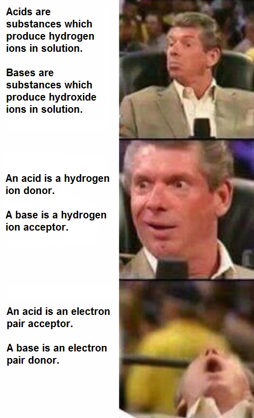

- Normal blood pH is 7.40 (7.35 – 7.45)
- Acidosis – pH < 7.35 ↑ H+ ions
- Alkalosis – pH > 7.45 ↓ H+ ions
- 2 major classes of acids in body:
- A volatile acid can be converted to a gas
- CO2 in bicarbonate buffer system can be breathed out (lungs).
- All other acids are non-volatile and cannot leave blood
- Non-volatile acids – lactic acid, fatty acids, ketone bodies.
- Need to bind to buffer molecules.
- Buffers in the body include HCO3–, PO42–, proteins including Hb.
- Kidneys – excrete H+ into urine, reabsorb HCO3- from urine (Part II).
